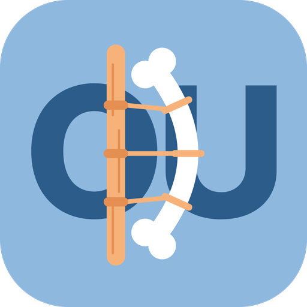

Ortopedski utrip
Ortopedske novice, raziskave in zanimivosti, preverjene ob izvirnih virih.
Odpri aplikacijo
Ikona na začetnem zaslonu
- To stran odpri v brskalniku Chrome.
- Tapni meni ⋮ zgoraj desno.
- Izberi »Dodaj na začetni zaslon« ali »Namesti aplikacijo«.